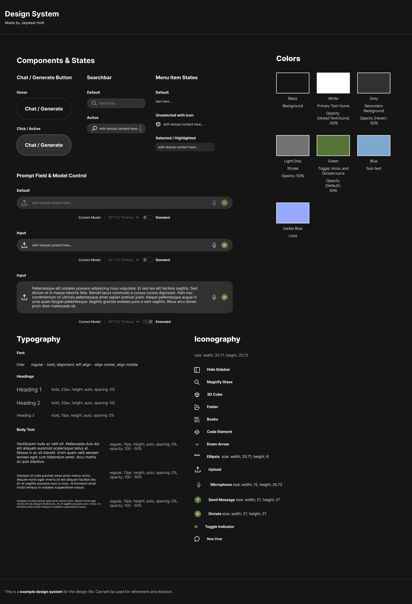
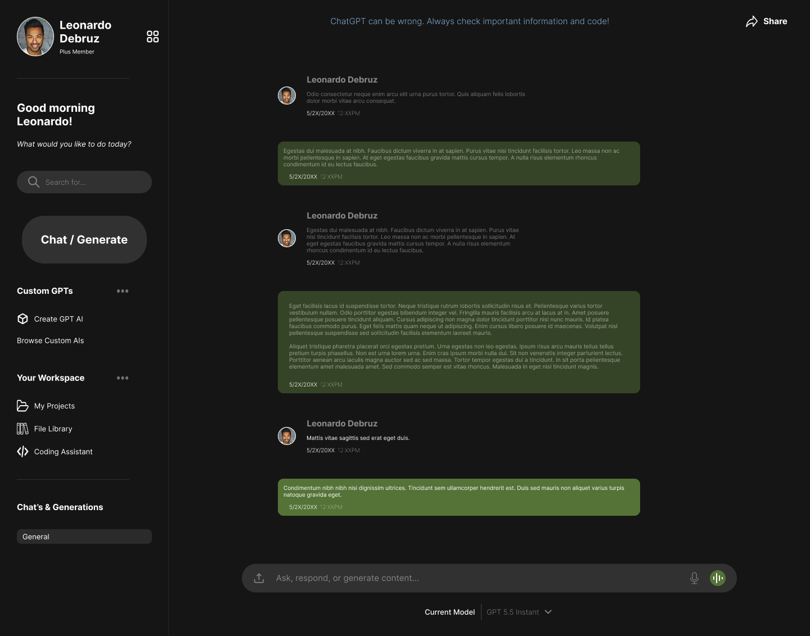
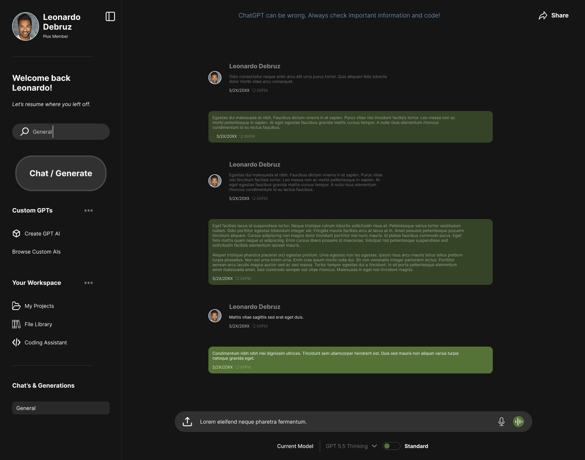
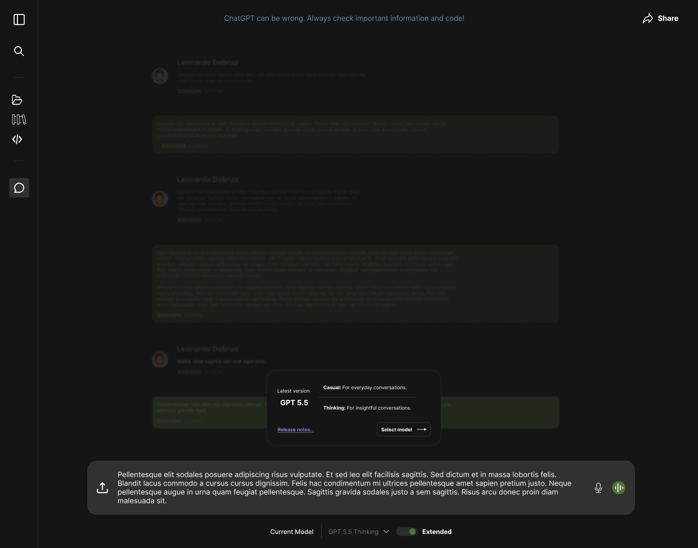

Design System Iteration & Refinement with ChatGPT
A focused redesign of ChatGPT’s active desktop workspace, centered on navigation clarity, action hierarchy, and reducing cognitive load.
Synopsis
I redesigned the active desktop workspace of ChatGPT, to prove a product shouldn’t force users to adapt to its internal structure just to use it comfortably. The result? A cleaner, scalable, and better workspace for all users using AI for personal or professional reasons.
Note: This project is finished to prove it's intent. Changes can, but are less likely to happen.
The Design Process
The Problem
ChatGPT is one of the most widely used generative AI products, but its active workspace still has opportunities for refinement. The current experience can feel more organized around product features than user intent, making it harder for new, casual, and everyday users to understand where to go, what to do, and how to make the workspace their own.
The redesign focuses on four core issues that impact how users engage with ChatGPT as a product:
- The current workspace feels feature-led instead of user-intent-led, requiring users to understand product-specific terms before certain areas feel meaningful.
- The sidebar has redundancy and weak hierarchy, with limited distinction between personal workspace areas, system tools, and product features.
- Key controls are disconnected from the user’s moment of action. For example, starting a chat or generation is one of ChatGPT’s core actions, so it should feel like a primary action rather than another navigation item.
- Advanced AI options are not explained clearly enough, which can leave users guessing what models, GPTs, or tools are best suited for their task.
While other areas could continue to evolve, these four issues had the strongest impact on workspace clarity, navigation, and user confidence.
The Solution
The solution was to redesign ChatGPT’s active workspace around user intent rather than product feature exposure. I restructured the sidebar, prompt area, and model controls so users can more easily understand where to go, what to do, and how to configure ChatGPT at the moment they are ready to engage.
The redesign supports user intent through the following decisions:
- I reorganized the sidebar around user intent, separating personal workspace areas, custom GPTs, and system-level tools so the interface feels easier to scan and navigate.
- I reduced redundant entry points and gave the sidebar a clearer hierarchy, making it function more like a workspace hub instead of a list of competing product features.
- I moved model configuration closer to the prompt field so users can choose how ChatGPT should respond at the moment they are preparing to type or generate.
- I created a compact design system and interaction-state frames to show the redesigned workspace, reusable components, and key behavior patterns without turning the project into a full end-to-end product rebuild.
The Outcome
The redesigned active workspace better supports a user-intent-led experience. By reorganizing the sidebar, reducing redundancy, and moving model controls closer to the prompt field, the interface becomes easier to understand, easier to navigate, and faster to engage with.
The final design file supports this direction through a compact design system, before-and-after workspace frames, and key interaction states. Together, these artifacts show how the redesign improves clarity without needing to rebuild ChatGPT as a full end-to-end product.
Visual Blueprint
This section contains the visual design materials that would support implementation, review, or developer hand-off. The screens below show the design system direction and the high-fidelity active workspace redesign.



